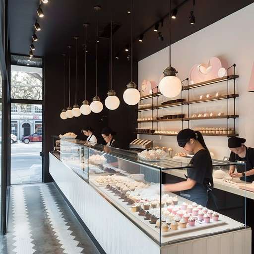

From Humble Beginnings
Welcome to Sweet Delight Bakery, where every creation tells a story of passion and tradition. We started with a simple dream: to share the joy of freshly baked goods with our community. From our humble beginnings in a small kitchen, we have grown into a beloved local bakery, but our commitment to quality and craftsmanship remains the same.
Founded in 2010 by master baker Sarah Johnson, Sweet Delight began as a small home-based business. Sarah's passion for creating beautiful, delicious treats quickly gained a loyal following, and within two years, we opened our first storefront in the heart of the community.
Today, we continue to honor Sarah's original recipes while constantly innovating to bring you new and exciting flavors. Our team of talented bakers and pastry chefs work tirelessly to ensure that every item that leaves our kitchen meets our high standards of quality and taste.
Our Philosophy
At Sweet Delight, we believe that baking is an art form that brings people together. Our philosophy is simple: use the finest ingredients, employ time-honored techniques, and infuse every creation with love and attention to detail.
We source our ingredients locally whenever possible, supporting our community's farmers and producers. From the rich butter in our croissants to the fresh fruits in our tarts, we carefully select each component to ensure the highest quality and flavor.
Our recipes are a blend of classic techniques and modern innovation, resulting in treats that are both comforting and exciting. We take pride in creating not just baked goods, but memorable experiences that brighten your day and create lasting memories.